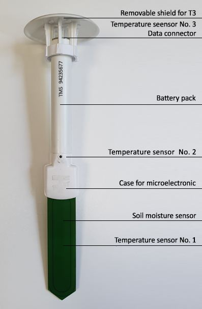
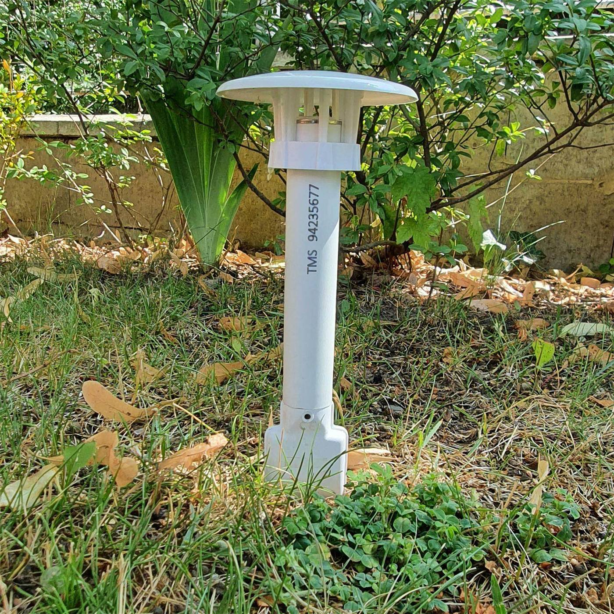
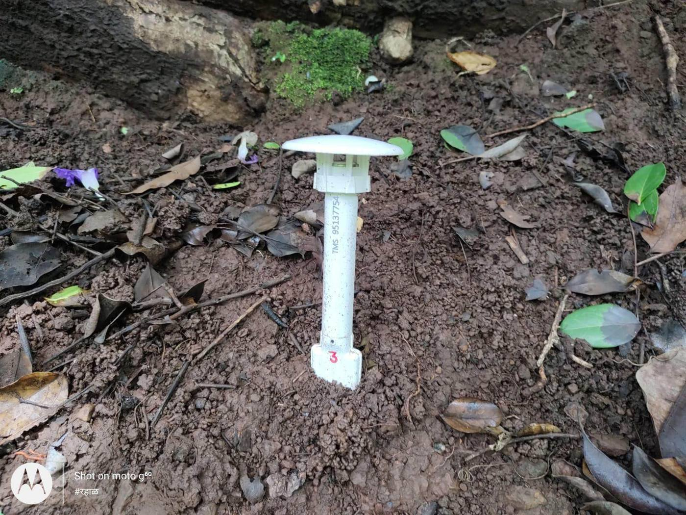
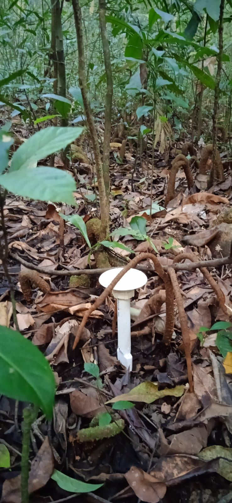

Probe locations and information
We have installed multiple microclimate probes in the region of Western Ghats. As new projects come up in the near future, we shall plan to install elsewhere in the country too. Below you will find the pinned location of these probes on the map. You can click on that pin and find the information about that probe - location, history, data availability etc.
Tip: numbered circles group nearby loggers. Click one to zoom in, or pick a site from the list.
How the loggers are arranged
Most sites are set up as small transects, so we can compare microclimates that are only a few hundred metres apart but very different ecologically.
Swamp → edge → peak
At Darbejaddi, Chare, Choudikan–Nilkund and the Elaeocarpus swamp, loggers sit inside the swamp, at its edge or in the neighbouring evergreen forest, and on the hilltop above. This shows how much the wet valley floor buffers heat and drought.
Long-term monitoring plot
At Sayimane, a permanent plot with loggers at its four corners (LTM NE, NW, SE, SW) is surrounded by valley, forest-floor, edge, open and grassland loggers. Together they capture fine-scale variation within one landscape.
Latitudinal network
Single sites from Sakleshpur in the south to Shirkoli near Pune in the north extend the network along the length of the Western Ghats, across very different rainfall and forest types.
Some information about these probes
Officially called TMS-4 dataloggers, it measures the air and soil temperature as well as soil moisture using three temperature sensors and one soil moisture sensor - every 15 minutes, with the potential capacity to run for ~ 10 years. More information could be found here: https://tomst.com/web/en/systems/tms/tms-4/.

| Sensor | Position | What it tells us |
|---|---|---|
| T3: air temperature | 15 cm above ground | The air seedlings, herbs and small animals live in |
| T2: surface temperature | 2 cm above ground | Conditions in the leaf litter layer |
| T1: soil temperature | 6 cm below ground | Root-zone and soil-organism environment |
| Soil moisture | Top ~15 cm of soil | Water available to plants and fungi |
Reference: Wild J., Kopecký M., Macek M., Šanda M., Jankovec J., & Haase T. (2019) Climate at ecologically relevant scales: A new temperature and soil moisture logger for long-term microclimate measurement. Agricultural and Forest Meteorology, 268, 40–47.



Help us expand the network
Each new probe fills a gap in our picture of the Western Ghats. You can adopt a probe, offer a site on your land, or request data from existing probes.